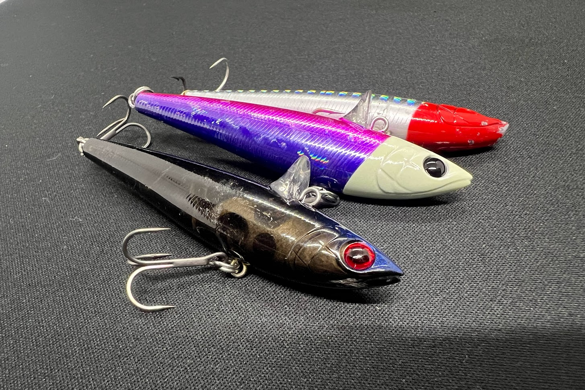
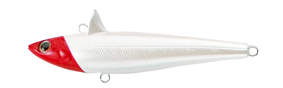
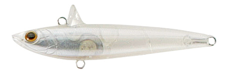
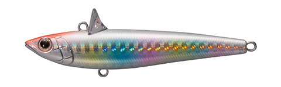
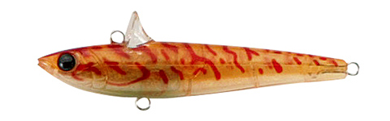

ローリングベイト77
シーバス界の名作ルアー”ローリングベイト”。
唯一無二のローリングアクションは弱った魚の動きを完全再現。

唯一無二のローリングアクションは弱った魚の動きを完全再現。
- メーカー
- TACLEHOUSE
（タックルハウス） - 長さ
- 77mm
- 重さ
- 15g
- タイプ
- シンキングペンシル
- アクション
- ローリング
- ターゲット
魚種 - シーバス
- 開発者
- 坂本智春
ローリングベイト77の特徴・コンセプト
ローリングベイト77は、タックルハウスの名作ルアーで、シーバス界で数々の釣果を残しています。
おすすめの使い方・状況
主な使用シーンは河口部や干潟などの流れが効く場所。
ワンポイント
人気カラー

PWレッドヘッド
レッドヘッドはシーバス定番カラー。弱ったベイトを演出できる

PHGクリア
稚魚に見えるクリアカラー。ルアーサイズに悩んだときはこれ一択

SHレインボー
レインボーはきれいで釣れる定番カラー

アカエビ
エビをイミテートしたカラー。ボトム付近のベイトを狙っているシーバスをロックオン
画像出典:TACLEHOUSE
実際の使用インプレッション
実際に使用してみると、横風や向かい風でも安定した飛距離と姿勢を維持。
ただ巻きでは良くも悪くも優等生なアクション。
blooowinの神髄は姿勢を崩さないジャーキングアクションだと思います。
初心者よりもシーバスが釣れ始めた中級者向けかも。
流れが強い場所でも姿勢が安定しており、ジャーキングもしやすいので、激流での使用は効果抜群。
姿勢の良さと飛距離を活かせる河口や大場所、サーフゲームにオススメです。
ローリングベイトシリーズ
ローリングベイトのサイズラインナップは以下の通り。
- S
似ているルアー
- ローリングベイトメタル
- ローリングベイトシャッド
- ベゼルロール